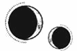

CAPÍTULO 74
Julius 1789
Los detalles en hierro forjado que decoraban la casa cobraron vida como si fueran serpientes y se enroscaron en torno al cuerpo de Atreus para inmovilizarlo como a un insecto. Su hijo le rompería todos los huesos del cuerpo antes de que tuviera oportunidad de escapar.
Kaine regresó junto a Helena y le tocó el rostro con una mano temblorosa.
—¿Te ha hecho mucho…?
—Solo… solo ha sido la espalda y no es muy… No es una herida muy profunda. Las terminaciones nerviosas siguen intactas.
Eso era bueno, pero también explicaba el dolor insoportable que sentía. Se quedó quieta, con el torso contra las rodillas, mientras Kaine le insensibilizaba la espalda con la resonancia.
—Necesito recuperar el aliento, nada más —lo tranquilizó pese a que estaba temblando descontroladamente.
—Ya casi ha terminado todo. En cuanto estés curada, te irás con Amaris. ¿Te ves capaz de volar?
Helena no sabía si podría permanecer consciente durante mucho más tiempo, pero tampoco iba a decirle que no.
—¿Por eso has montado todo esto? —Oyeron la voz furiosa de Atreus desde donde estaba retorcido en el suelo—. ¿Solo porque intentas salvarla?
Helena pensó que Kaine ignoraría a su padre, pero levantó la vista para mirarlo.
—Según parece, estoy condenado a amar como tú.
—Después de que te haya matado, Morrough moverá cielo y tierra para encontrarla. La chica no tendrá dónde esconderse. Te vas a sacrificar para nada.
Kaine no respondió y sus ojos se desenfocaron un instante.
—El fuego ya se ha apagado. Entremos dentro.
Antes de que Helena pudiera intentar incorporarse, un estruendo desgarró el aire. Por un momento, pensó que era la señal con la que llamaban a Kaine, pero provenía de la dirección equivocada. Al girarse, vieron que un camión se aproximaba rugiendo por la carretera a tal velocidad que estuvo a punto de chocarse con la verja.
—¡Ya vienen! ¡Soltadme! —aulló Atreus—. ¡Soltadme, os digo!
El vehículo frenó en seco y una persona se bajó con torpeza del asiento del conductor. Llevaba algo aferrado al pecho, como si huyera con un bebé en brazos.
—¡La tengo! La tengo. Cogedla rápido.
Era Ivy. Se presionó contra la verja mientras miraba desencajada hacia atrás, como si la estuvieran persiguiendo.
Helena cruzó el patio, trastabillando y con los brazos extendidos hacia ella.
—¿Cómo has…? —preguntó con voz temblorosa por la incredulidad.
Ivy le pasó el fardo húmedo y con olor a gangrena y formaldehído a través de los barrotes. Entonces la tela cayó y reveló un brazo descompuesto arrancado a la altura del codo. Bajo la piel desprendida faltaban varios huesos. De hecho, tan solo le quedaban tres dedos, que se estremecían como si aún tuvieran vida.
—Ha sido Sofia —explicó Ivy, temblorosa y sin aliento. Tenía los ojos enrojecidos y el rostro manchado de lágrimas y carne podrida—. Intenté acercarme a él por todos los medios, pero fui incapaz. —Negó con la cabeza—. Fue ella quien lo logró.
—¿Cómo?
—Morrough no les presta atención a sus necrómatas —admitió con una mueca—, pero Sofia siempre hace lo que yo le digo. Siempre. Cuando se acercó a él, ni siquiera se percató de su presencia. Le arrancó el brazo de cuajo y me lo lanzó. Como la atacó a ella primero…, yo pude escapar. —Se le arrugó el rostro—. ¿Crees que podría perdonarme si lo supiera?
Helena no sabía qué decir.
—Tu hermana te quería.
Ivy se quedó allí temblando. Kaine por fin había llegado hasta ellas y, aunque su expresión era inescrutable, metió una mano dentro de la chaqueta de su uniforme y sacó un cuchillo de obsidiana.
—¿Qué estás…? —empezó a decir Helena, pero entonces el chico le dio la vuelta al arma para ofrecérsela a Ivy, que la aceptó sin vacilar.
—En el pecho, cerca del corazón —le dijo—. Es la manera más fácil.
Ivy asintió, se dio la vuelta y se subió con torpeza de nuevo al camión. Se alejó en un abrir y cerrar de ojos, y el rugido del motor se fue apagando hasta que de su visita no quedó más que el polvo suspendido en la carretera y el fardo al que Helena se aferraba.
—Kaine —le dijo con la voz ronca por el humo—, ahora ya puedes venir conmigo. Escaparemos juntos.
Él negó con la cabeza.
—Entra en casa.
Helena lo miró estupefacta y se negó a moverse cuando intentó arrastrarla de vuelta a Puntaférreo, así que Kaine apretó los dientes y la cogió en brazos.
—¿A qué viene esto? —Helena trató de bajarse sin soltar el fardo, consciente de que las quemaduras de la espalda se le iban a poner en carne viva—. Ya tenemos lo que necesitábamos. Nos dará un mes de margen y nos permitirá buscar la manera de…
—No puedo acompañarte —la interrumpió él sin detenerse—. Mi padre tiene razón. Cuando Morrough se entere de que has escapado, te dará caza, haya guerra o no. Si me fuera contigo podría protegerte durante ese mes, pero luego te quedarías sola, y a Morrough le bastaría con sus rastreadores para encontrarte. Al final acabaría haciéndolo. Si me quedo, ahora que tenemos la filacteria y ya no puede controlarme, puedo asegurarme de que nadie salga de la ciudad hasta que tú estés a salvo.
Helena se aferró a su hombro en un intento por hacer que la escuchara.
—Pero, si revertimos el…
Kaine negó con la cabeza; casi habían llegado a la puerta.
—Necesitarías un alma dispuesta a sacrificarse por mí y los dos sabemos que no vas a encontrar ninguna, porque la única persona que se prestaría a algo así serías tú.
Helena lo miró como si la hubiera golpeado en la garganta.
—¿En serio? ¿Ni siquiera me lo vas a preguntar a mí? —dijo Atreus con tono burlón desde el suelo.
Helena jadeó y se retorció contra el hombro de Kaine para mirar a Atreus. Seguía tirado sobre la gravilla, inmovilizado por el hierro, incapaz siquiera de mover los dedos.
—¿Lo harías?
—Prefiero morir —intervino Kaine antes de que su padre tuviera oportunidad de responder.
—Necesitas un voluntario —dijo Atreus sin quitarle el ojo de encima a Helena—. ¿No es así? Necesitáis un alma dispuesta a sacrificarse. Ahí también tienes mi filacteria. Es la falange media del dedo índice.
La chica bajó la vista al brazo descompuesto. Rezumaba una sustancia negra y espesa en vez de sangre y, en efecto, contaba con esa falange entre los huesos que le quedaban. El corazón le dio un vuelco con incredulidad.
—¿Por qué ibas a prestarte tú voluntario? —preguntó Kaine, que lo miraba con una mueca de asco y los ojos encendidos de rabia—. Me has odiado desde que nací.
—Tu madre habría querido que te salvara —dijo el hombre esquivando la mirada de su hijo.
—Bueno, pues llegas tarde.
Kaine llevó a Helena adentro sin detenerse siquiera cuando ella se lo pidió.
—Me niego a discutir. Lo único que me queda por hacer es sacarte de aquí lo más rápido posible. Es una suerte que los ojos de los necrómatas que montaban guardia en la puerta estén prácticamente licuados, porque de lo contrario nos habrían pillado.
Atravesó los restos calcinados de la puerta del dormitorio de Helena y esquivó el cadáver que yacía allí. Era una de las doncellas. El resto del servicio lanzaba agua por toda la estancia para asegurarse de que el fuego estuviera completamente extinguido. También recogían todo lo que hubiera sobrevivido a las llamas. La ventana estaba abierta y, pese a que el ambiente estaba menos cargado, todavía olía a la alfombra quemada, al hedor amargo de la madera mojada y a la acritud del hierro fundido.
Kaine la dejó en el suelo y abrió el cerrojo de una de las habitaciones que había a un par de puertas de distancia. En su interior había suministros médicos y bolsas de viaje. Sacó una caja.
—¿Cómo…? Las quemaduras. Nunca he…
—Si tu padre…
—No pienso hablar del tema hasta que te haya curado —sentenció con firmeza—. Ahora, dame eso.
Le quitó el brazo de las manos, lo metió en un armario y cerró la puerta para contener el hedor que desprendía.
A Helena no le parecía que tuviera intención de hablar más tarde, pero tendría que curarla antes o después.
—Córtame el vestido. Tendremos que usar suero para despegarme la tela de las quemaduras.
Kaine le echó la melena chamuscada hacia delante y sacó un par de tijeras para cortar la parte trasera de la prenda con cuidado.
—Odio estos vestidos —dijo ella mientras él le limpiaba la piel y empapaba la tela restante para intentar retirársela.
Entonces se tocó el hombro y utilizó la resonancia para hacer un balance de los daños. Las quemaduras eran más graves de lo que pensaba. Sus terminaciones nerviosas estaban intactas, pero, dado el tamaño y la profundidad de las lesiones, tardaría más tiempo del que disponían para curarse por completo. A Kaine le temblaban demasiado las manos para poder llevar a cabo una tarea tan repetitiva como la regeneración de tejidos y Helena no iba a poder contorsionarse lo suficiente para alcanzar todas las heridas. Kaine consiguió curarle las lesiones más superficiales, pero, al cabo de un rato, sus dedos dejaron de cooperar y la resonancia empezó a fallarle. Dio un paso hacia atrás respirando con dificultad.
—No pasa nada —lo tranquilizó ella.
—Claro que pasa.
—Aunque tuvieras el pulso firme, tardarías demasiado en curarme todas las heridas. Con que me dejes la espalda limpia y entumecida, aguantaré.
Kaine asintió despacio y rebuscó en una caja para sacar un tarro de ungüento que Helena reconoció enseguida.
—¿Esto te iría bien?
—Sí, servirá —dijo ella con una suave carcajada.
Kaine se lo aplicó con cuidado y le envolvió la espalda con vendas de seda, porque eran más suaves que las de lino.
—Ojalá hubiera podido darle estos lujos yo también a tu pobre espalda —comentó mientras Kaine la curaba.
Su resonancia bailó por las zonas doloridas que le había dejado el aire abrasador, así como por el pequeño corte que le surcaba la frente y que Helena ni siquiera había notado. Le curó todas las pequeñas magulladuras con las que pudo lidiar.
—Kaine —le dijo ella cuando terminó—, tengo que hablar con tu padre.
—No nos va a ayudar. Solo ha intentado darte falsas esperanzas para hacerte daño. Y, si hablaba en serio, tampoco quiero tener una parte de su alma en mi interior. Bastante me parezco ya a él.
Helena le giró el rostro para obligarlo a mirarla.
—Eres lo único que le queda de tu madre. Cuando te mira, solo la ve a ella. Era consciente del riesgo que correría al venir a por mí. Me ha atacado porque pensaba que eso te salvaría. —Tomó aire—. Sé que no quieres creerlo porque la esperanza te aterroriza, pero preferiría morir intentando salvarte que vivir sabiendo que tuve la oportunidad de hacerlo y la dejé pasar. —Kaine empezó a ceder—. Me prometiste que huiríamos juntos, ¿recuerdas?
Él agachó la cabeza.
—¿Por qué tengo yo que mantener todas mis promesas? Tú no cumples ni una sola.
Helena negó con la cabeza y alzó el rostro para apoyar la frente en la suya.
—La primera promesa que te hice fue que, mientras estuviera viva, sería tuya. Y esa tengo intención de cumplirla.
La habitación de Helena estaba destrozada y toda su ropa había quedado reducida a cenizas. Por suerte, Kaine había preparado ropa resistente y de colores neutros para el viaje. Se vistió con cuidado intentando no rozar las quemaduras de la espalda.
El pasillo estaba empapado y también había quedado completamente carbonizado, pero el hierro que revestía las paredes permanecía intacto, como el esqueleto de una bestia.
Atreus seguía tirado donde Kaine lo había dejado. Tenía los ojos cerrados, pero los abrió al oír sus pisadas. Levantó la cabeza, los miró a ambos y se echó a reír.
Helena agarró a Kaine del brazo antes de que pudiera reaccionar.
—Quiero hablar con él a solas —dijo Helena.
—No —replicó Kaine.
—No va a hacerme nada. Tú espera aquí.
Notó la mirada de Kaine clavada en ella mientras se acercaba a Atreus, quien la estudiaba también con un intenso interés.
—Mi oferta no iba dirigida a ti —le dijo el hombre cuando ella llegó a su altura.
—Sabes de sobra que él no te lo va a pedir —replicó arrodillándose junto a él.
—Pues entonces no hay más que hablar —zanjó Atreus apartando la mirada.
El miedo le formó un nudo en el pecho a Helena. Sintió el impulso de ponerse a suplicar, pero sabía que con Atreus ni la compasión ni la humillación servían de nada.
—Yo voy a escapar independientemente de lo que decidas. Si te niegas a ayudarlo, lo estarás sentenciando a muerte.
Atreus desvió la vista más allá de Helena y la posó en Kaine, que los observaba con atención. Había un anhelo desesperado en los ojos de Atreus cuando miraba a su hijo. Helena quiso decir algo, pero prefirió esperar a que él rompiera por fin el silencio.
—No me di cuenta de lo mucho que se parecía a ella hasta que regresé. Lo pasé por alto incluso cuando era un chiquillo. —Entornó los ojos, como si le costara distinguir las facciones de Kaine en la distancia—. Nunca entendí por qué Enid estaba tan empeñada en tener un hijo. Yo habría estado dispuesto a adoptar un heredero de cualquier familia del gremio del hierro de haber sido necesario. Mi amor debería haberle bastado.
Helena se compadeció de él. Sentía tanta envidia de su hijo que resultaba patético.
—Kaine es lo único que queda de ella en el mundo. —Por fin miró a Helena—. ¿De verdad puedes salvarlo?
—Sí, pero solo si tú colaboras de corazón.
A Helena se le cayó el alma a los pies cuando Atreus no respondió enseguida. El vínculo se desvanecería si no se sacrificaba voluntariamente y Kaine se le escaparía de entre los dedos, igual que le había pasado con Luc.
—Enid lo era todo para mí —dijo al final—. Si ella estuviera aquí, me pediría que lo salvara. Nunca fui capaz de negarle nada.
Helena tocó el hierro para liberarlo y Atreus se incorporó despacio, se dio la vuelta y entró en la casa sin mirar a ninguno de los dos.
Cuando entraron en la sala de estar, Atreus no despegó los ojos de la jaula. ¿Acaso no la había visto nunca? Quizá no se había parado a pensar cuál había sido su cometido.
—¿Cuánto tiempo estuvo…?
Tocó los barrotes con dedos temblorosos y se dejó caer de rodillas, como si tratara de arrastrarse adentro para ocupar el mismo espacio que su difunta esposa.
—Cuatro meses —dijo Kaine con voz carente de emoción.
Sus ojos vagaron por toda la estancia, como hacía siempre que entraba allí. A Helena le habría gustado reconfortarlo, pero se estaban quedando sin tiempo y aún tenían mucho que hacer, así que se puso a trabajar en el sello del suelo. El que ella había bocetado había ardido con las llamas, pero se sabía cada trazo de memoria. Lo único que necesitaba era la parte central del sello original, la cual habría que reconstruir y modificar. Tenían que contener el alma de Kaine hasta que pudiera fijarla en su interior.
Su intención era dibujar el nuevo sello con hierro, pues era perfecto para lo que se proponían hacer, y de eso en aquella casa había más que suficiente.
Cuando estuvieron listos, Kaine y ella se arrodillaron el uno frente al otro, dejando el diseño entre ellos. Kaine cerró los ojos y, al abrirlos de nuevo, sus iris resplandecían. Pese a lo mucho que le temblaban las manos, su resonancia era mucho más fuerte que la de ella. El aire vibró, la casa emitió un quejido y el hierro empezó a fluir hacia ellos como si fuera agua. Cuando el metal alcanzó el sello, Helena utilizó su propio poder para guiarlo y hacer que siguiera los trazos grabados en el suelo, en dirección al círculo de contención que habían marcado en el centro.
Los sellos industriales de los gremios podían extenderse hasta cubrir la planta entera de un edificio, pero Helena nunca había trabajado con uno que excediera el tamaño de la palma de su mano. El diseño con el que iban a trabajar era tan enorme que ni siquiera alcanzaba a verlo entero de una sola vez y tenía que arrastrarse por el suelo para comprobar que cada trazo y cada símbolo eran correctos. Debía ser perfecto.
El corazón le latía con tanta fuerza que parecía querer salírsele por la boca latiendo a un ritmo irregular.
Tenían una sola oportunidad.
—Está listo —dijo por fin poniéndose de pie y colocándose en el centro del sello—. Comencemos.
Kaine asintió, pero se dirigió a la puerta. Los sirvientes que quedaban se habían reunido en el pasillo, encabezados por Davies.
—¿Está Amaris preparada? —Uno de ellos asintió en silencio, y Kaine hizo una pausa y dijo—: Nunca… nunca os he dicho… que siento mucho no haber podido salvaros.
Davies dio un paso adelante con indecisión, murmuró su nombre, como solía hacer, y le peinó el cabello hacia atrás con gesto maternal antes de tocarle el pecho con ambas manos y empujarlo suavemente. Lo alejó de ellos.
Helena cogió el brazo de Morrough allí donde Kaine lo había dejado. El hedor que desprendía era como una patada en el estómago, así que se apresuró a diseccionarlo. Era repulsivo. Al sostenerlo, percibía todo el poder que contenía, todas las vidas que albergaba en cada hueso. La sección del cúbito más próxima a la mano le resultaba aterradoramente familiar. Ese era el fragmento que había usado para vincular a Kaine. Tras retirarlo, descartó el resto del brazo.
Kaine se había colocado en el centro de la estancia y se había desnudado de cintura para arriba. Pese a tener la piel surcada de cicatrices, la más llamativa de todas era el sello de su espalda, y a Atreus no se le pasó por alto. Como era evidente, no lo había visto antes.
Kaine, por su parte, solo tenía ojos para ella.
No había una plataforma que la elevara por encima del sello, así que había tenido que meterse dentro con él.
—Túmbate sobre la espalda —le pidió antes de arrodillarse a su lado. Luego le colocó las manos en el lugar correspondiente y lo miró a los ojos. Su corazón empezaba a resentirse y su ritmo cardiaco amenazaba con volverse irregular—. Te prometo que va a salir bien. Voy a salvarte.
Tocó el hierro frío del sello con ambas manos y dejó que su resonancia fluyera por él.
La única vez que había volcado su animancia en un sello había sido mientras experimentaba con las planchas de grabado. Requería mucho más poder de lo que había esperado. Al activarse, un resplandor fue extendiéndose poco a poco por el hierro, hasta que el sello empezó a emitir un suave zumbido. Kaine pareció volverse translúcido y Helena tuvo la sensación de ver un entramado de huesos y órganos a través de su piel, así como el talismán enredado junto a su corazón.
Helena preparó la filacteria. El hueso era tan antiguo que amenazaba con desintegrarse de un momento a otro y estaba tan desgastado que tuvo que concentrarse a fondo para percibir la energía que contenía. Era como un paquete atado con un cordel tan anudado y retorcido que resultaba imposible de soltar. Tendría que trabajar con sumo cuidado o, de lo contrario, correría el riesgo de hacerle daño a Kaine. Desenredó y desenredó con su resonancia ese cordel que parecía ser infinito hasta que oyó un repentino golpe sordo. Al levantar la cabeza, descubrió que uno de los sirvientes del pasillo se había derrumbado.
Volvió a centrarse en el sello y siguió adelante, aunque se encogió cuando oyó que otro necrómata caía al suelo. Y otro. Y otro más. Como era de esperar, al haber sido la primera en morir, la última en caer fue Davies. La mujer sostuvo la mirada de Helena un instante antes de desplomarse.
El fragmento de hueso se desintegró y desató una energía convulsa, pero, en lugar de dejar que se transformara en un torrente frío y muerto, Helena tiró de ella para contenerla dentro del sello.
El ambiente se iluminó y el cabello de Helena se le levantó de los hombros.
Entonces Kaine empezó a gritar.
Se le desencajó y desenfocó la mirada; se le arqueó la espalda, y arañó el suelo hasta dejarse las yemas y las uñas en carne viva. Helena se cernió sobre él.
—No, no me hagas esto. Aguanta —le pidió mientras forcejeaba con él para inmovilizarlo y obligarlo a permanecer en el centro del sello.
Le ralentizó el pulso y le paralizó las extremidades para impedir que se moviera, pero Kaine no dejó de gritar.
Buscó a tientas la filacteria de Atreus y, en cuanto desenredó la energía ya fuera de sí, el hueso se desintegró y el sello trató de absorber también el alma del hombre. Helena se aferró a ella con la mano izquierda y se negó a soltarla; no podía permitir que se mezclara con la de Kaine. Con la resonancia al límite, empezó a sufrir calambres en los dedos que pronto se le extendieron por el antebrazo. Presionó el pecho de Kaine con la mano libre y tiró del torrente de energía que fluía por el sello para tratar de sumergirlo en él, pero el dolor estaba haciendo que él proyectara su resonancia hacia fuera, contra ella. Por mucho que Helena se esforzó, no logró contenerla.
Se inclinó hacia delante, hasta que la frente de Kaine tocó la suya. Había dejado de gritar después de quedarse sin voz y sus ojos seguían desenfocados.
—Te necesito. Ya casi hemos acabado, pero tienes que regresar aquí conmigo. Recuerda que vamos a escaparnos. El bebé, tú y yo. Vamos a ser libres. Voy a salvarte, pero necesito que luches conmigo.
Una repentina descarga de dolor estalló en su mano izquierda y perdió la sensibilidad en dos dedos. Se le quedaron sin fuerza y apenas pudo mantener el control de su resonancia, así que se lanzó hacia delante y besó el rostro de Kaine.
—Vuelve. Quédate conmigo.
Sus ojos por fin parecieron posarse en ella.
Helena volvió a presionarle el pecho y fue como si le insuflara todo el oxígeno de la estancia en un intento por meterle dentro toda la energía acumulada. El brillo que iluminaba los bordes del sello se fue apagando y filtrándose hacia el centro del diseño hasta desaparecer bajo Kaine. La tensión que le agarrotaba la mano izquierda a Helena por fin cesó.
Kaine apenas respiraba y emitía un silbido ronco cada vez que tomaba una bocanada de aire, así que Helena tuvo que actuar deprisa. No permitiría que le pasara lo mismo que a Luc. Esta vez sabía a lo que se enfrentaba.
Manipuló el alma de Atreus por medio de la animancia, la estiró hasta convertirla en un hilo fino y la vinculó a Kaine, igual que hacían con las filacterias, enrollando su energía una y otra vez como una tela de araña en torno a sus costillas y su talismán.
No utilizaría tanta energía como para crear un nuevo parásito como Cetus, pero sí la bastante como para que el cuerpo de Kaine recordara lo que era tener un alma.
Cuando terminó, él permaneció tumbado en el suelo sin moverse, así que le tocó el pecho para comprobar que todo iba bien. Estaba vivo y era mortal.
Ni rastro de la fría sensación de la muerte.
Helena dejó caer los hombros; estaba tan cansada que bien podría haberse derrumbado junto a Kaine, pero todavía no habían acabado. Aquello no había sido más que el principio.
Se puso de pie con torpeza.
El cadáver de Crowther yacía muerto de nuevo junto a la jaula.
Helena todavía tenía la mano izquierda agarrotada en un puño en el que sujetaba los restos maltrechos del alma de Atreus. Apenas le bastó con tocarle el pecho y depositar en él la poca energía que le quedaba a la filacteria para reanimarlo.
Los ojos de Atreus volvieron a enfocarse poco a poco. Allí, arrodillada junto a él, Helena notaba la misma sensación que cuando Luc había muerto gradualmente. Aunque seguía vivo, la energía se le escapaba despacio de entre los dedos.
—¿Está vivo? —preguntó mirando a Kaine, que seguía tumbado en el suelo.
Helena asintió.
—¿Me ayudarías a levantarlo? No voy a poder sola.
Atreus se incorporó y se acercó a su hijo, pero Helena se quedó rezagada mientras intentaba curarse la mano izquierda. Llegó a su lado cuando el hombre estaba incorporando a Kaine y vistiéndolo rápidamente. Cuando lo levantaron entre los dos, la cabeza de Kaine se venció hacia atrás, aún incapaz de sostenerse a sí mismo. Helena volvió a detenerse para reanimar a los sirvientes: necesitaría su ayuda una vez más.
Hacía tiempo ya que había caído la noche. Lumitia apenas era visible, la luna se mostraba en cuarto creciente y el cielo estaba salpicado de estrellas.
Amaris los esperaba fuera y golpeaba el suelo con las zarpas en actitud nerviosa. Le habían dejado colocada una silla de montar equipada con alforjas. Agitó las alas al ver que los sirvientes sacaban a Kaine.
—No pasa nada. Está bien —la tranquilizó Helena, que se acercó a la quimera con paso vacilante haciendo sonidos tranquilizadores para que se agachase. Si se quedaba de pie, sería imposible subir a Kaine a su lomo.
Cuando Helena tiró del cabestro que le rodeaba la cabeza, el animal se agazapó a regañadientes, sin apartar los ojos amarillos de Kaine. Este parecía empezar a recuperar el conocimiento y había entreabierto los ojos cuando lo subieron a la silla de montar. Helena lo aseguró con las cinchas y el arnés que la equipaban, que probablemente estaban pensadas para ella.
Amaris intentaba girarse una y otra vez buscando a su dueño mientras profería suaves gimoteos.
—Tranquila, bonita —le dijo Helena mientras se acomodaba tras él en la silla. Metió la mano en el bolsillo para sacar los anillos de ignición de Atreus y ofrecérselos—. Hay que destruir el sello. Nadie debe enterarse de que sigue vivo.
Amaris se incorporó y extendió las alas, impaciente por alzar el vuelo. Helena estaba a punto de soltar las riendas y dejar que echara a correr cuando Atreus habló:
—Kaine…
Él levantó la cabeza lo justo como para mirar a lo que quedaba de su padre. Su rostro reflejaba el agotamiento y el dolor que sentía, pero no había ni rastro de la crueldad y el odio que solía mostrar al contemplar a Atreus.
—Padre…
El rostro del hombre pareció suavizarse de golpe. Hizo intención de extender una mano hacia su hijo, pero Amaris le lanzó un gruñido de advertencia y él cerró el puño de golpe.
—Tu madre siempre estuvo orgullosa de ti. Decía que eras lo mejor que habíamos traído a este mundo. —Miró a Helena y añadió—: Sálvalo.
En vez de responder, ella se limitó a soltar las riendas de Amaris, que cruzó el patio al galope. Bajo la silla de montar, los músculos de sus alas se tensaron y se agitaron antes de alzar el vuelo de un salto. Batió las alas negras como el ónice para perderse en el cielo nocturno y volar cada vez más alto. El aire silbaba a su alrededor y Helena tuvo que agarrarse al arnés que sujetaba a Kaine a la silla.
La ciudad resplandecía bajo sus pies, pero el continente era como un vacío, un abismo de negrura del que intentaban escapar al volar cada vez más cerca de las estrellas.
Cuando Amaris dejó de ascender, una chispa prendió en el suelo y creció hasta convertirse en un inmenso anillo de fuego que devoró Puntaférreo con sus llamas.